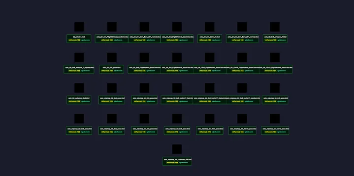

3D > Material & Texture > KTX2 Texture
ASTC (Mobile / Apple Silicon Only) - RedGPU WebGPU Example
Tests ASTC compressed KTX2 textures with software decoding fallback.
ASTC 압축 KTX2 텍스처와 소프트웨어 디코딩 폴백을 테스트합니다.

3D > Material & Texture > KTX2 Texture
Tests ASTC compressed KTX2 textures with software decoding fallback.
ASTC 압축 KTX2 텍스처와 소프트웨어 디코딩 폴백을 테스트합니다.
